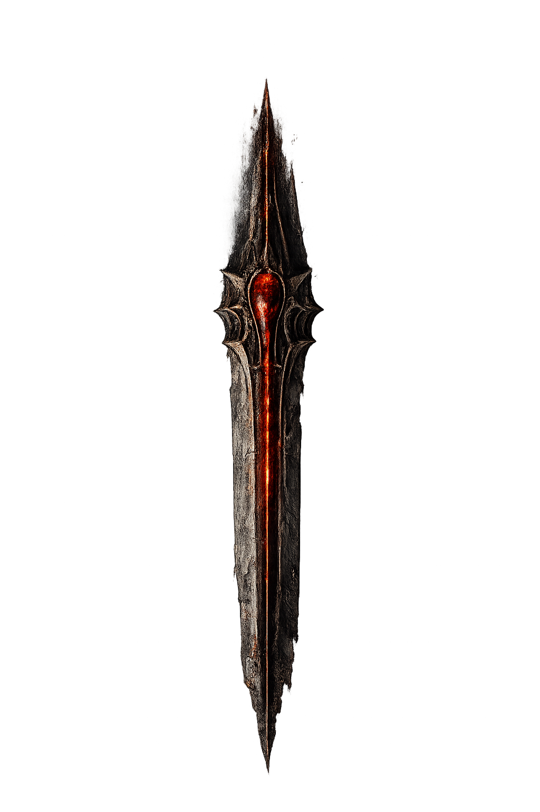

⚔️ Armi & Equipaggiamento

Ascia Sacra
Ascia rituale indicata da Padre Giacomo per spezzare il passaggio oltre la soglia della cripta.

Lama Spada delle Anime
Frammento della lama drop di Saragatanas. Riassemblarla sblocca la forma definitiva dell'arma del Berserker.

Mazza Medievale
Arma da mischia contundente. Colpi devastanti contro non-morti ossuti che non apprezzano l'impatto.

Mirino
Accessorio per armi da fuoco. Aumenta la precisione della Pistola a lunga distanza.

Molotov
Bottiglia incendiaria. Attira GrindHouse allo scontro e brucia le vie d'accesso al cimitero.

Moto Sega Vampiri
Motosega da caccia di Carl Helsing. Progettata per aprire varchi definitivi nei corpi dei non-morti.

Pistola
Arma compatta consegnata da GrindHouse dopo lo scontro nel Parco delle Ombre.

Spada delle Anime
La lama maledetta del Berserker. Assorbe le essenze degli avversari abbattuti, crescendo di potere.

Spara Chiodi
Arma perforante affidata da Jesus al Berserker. Chiodi da 9 cm contro demoni corporei: risultati definitivi.

Stivali Mascella
Calzari pesanti rinforzati con placche ossee. Aumentano la resistenza fisica del Berserker nei combattimenti ravvicinati.

Tirapugni di San Benedetto
Arma benedetta donata da GrindHouse. Trasforma ogni pugno del Berserker in un esorcismo improvvisato.
🔮 Oggetti Occulti

Acqua Benedetta
Ampolla di acqua benedettata in una cerimonia segreta. Indebolisce i non-morti e scioglie i vincoli spirituali.

Crema Santissima
Unguento rituale al profumo d'incenso e sale. Protegge chi si avvicina al velo tra i vivi e i morti.

Croce di Sant'Andrea
Reliquia sacra a forma di X. Respinge entità di grado inferiore e stabilizza l'aura spirituale di Dony.

Nebbia di Soglia
Fiala eterea che vela i confini tra i mondi. Consegnata da Willy nella fase finale dell'antro.

Pergamena dei Poteri
Antico scritto arcano, drop di Saragatanas. Amplifica i poteri di Dony oltre i limiti normali.

Pollo Voodoo Rock
Statuetta rituale a forma di pollo. Attira le attenzioni degli spiriti in modo particolarmente imbarazzante.

Profumo Jean Paul Golgot
Essenza vincolata al Custode Golgot. Solo questa fragranza spezza l'invulnerabilità del Golgotiano.

Rotolo delle Volontà
Le ultime volontà di Jesus, consegnate prima della sua scomparsa nella Libreria Esoterica.

Sacchetto Dark Web (Contessa)
Materiale biologico della Contessa acquistato sul Dark Web. Necessario per tracciarne la firma occulta.

Sacchetto Unghie, Denti, Occhi
Raccolta di residui biologici per rituali di localizzazione. Componente per sigilli avanzati.

Super Potere Elettro Lv1
Potere equipaggiabile su Dony. Scarica lampi rapidi sul bersaglio, aumentando il danno ad ogni scarica.

Super Potere Necro Lv1
Potere equipaggiabile sul Berserker. Libera spiriti fumosi che inseguono e drenano la sanità mentale del nemico.

Berserker dell'Occulto
Tomo maledetto trovato nella Libreria Esoterica. Contiene i rituali e le formule che hanno forgiato il Berserker come strumento della furia divina. Leggerlo ha un costo: ogni pagina strappa un frammento di sanità mentale.

Ghost Hunting Moderno
Manuale pratico di caccia ai fantasmi, scritto da un anonimo investigatore del paranormale. Contiene tecniche di rilevamento ectoplasmatico e protocolli di sicurezza mentale per affrontare spettri di classe C e superiori.
🗝 Chiavi

Chiave Cimitero / Cripta / Antro
Chiave pesante di ferro arrugginito. Tre varianti: Cancello Cimitero (GrindHouse), Cripta (Punk), Antro (Willy).
🍺 Consumabili

Bidone di Acidi
Contenitore industriale pieno di acido corrosivo. Utile come trappola ambientale contro i demoni corporei.

Birra Dahlberg
Confezione da 5 birre. Ogni lattina vale una ricarica di energia. Ricompensa di Punk, Annibale e Willy.

Cartoccio di Animelle
Un succulento cartoccio di animelle ancora calde fornite da Annibale. Meglio non chiedere la provenienza.

MediKit
Kit medico standard. Recupera HP per Dony e il Berserker. Prima ricompensa di Willy.

Whisky
Bottiglia di whisky economico lasciata dal Barbone Meccanico. Disinfettante, combustibile e calmante per i nervi.
💀 Bottino & Risorse

Accendino
Funziona a volte. Drop comune tra Blatte, Corvi e scheletri.

Argilla Tombale
Argilla fredda prelevata dalle tombe. Intrisa di residui spirituali, utile per i sigilli protettivi.

Biglietto Metro
Usato e inutile. Drop dei nemici della metro. Testimonia le vittime della rete sotterranea di Milano.

Formaggio Scaduto
Puzza terribilmente. Drop comune tra RageRats, Blatte e Astaroth.

Grasso di Sofferenza
Residuo organico del Tricheco. Repellente e nauseante quanto prezioso per la farmacologia rituale.

Pelle Nera di Topo
Drop garantito dei RageRats. Pelle ispessita da anni di vita nei tunnel. Usata per ricette di protezione.

Pirite
Minerale sulfureo dal bagliore dorato. Componente alchemico per pozioni ed incantesimi della Libreria.

Piuma di Corvo Nero Maledetto
Piuma strappata a un corvo corrotto. Emana un'aura oscura e assorbe la luce circostante.

Proiettili d'Argento
Munizioni benedette efficaci contro entità oscure e licantropi. Drop raro tra Blatte e Astaroth.

Reliquia Spettrale
Frammento osseo saturo di energia ectoplasmatica. Drop di Ghost, Prete Maiale e Scheletro Rock Gabbia.

Sacchetto di Vermi
Drop degli Scheletri del Cimitero. Lordo e acquoso. Il Punk ne accumula ossessivamente tre sacchi.

Sigarette del Tricheco
Pacchetto recuperato dal Barbone Meccanico. Fumano in modo strano e lasciano un retrogusto di zolfo.

Straccio
Pezza usata e logora, lasciata dal Barbone Meccanico. Componente per medicazioni improvvisate o fuochi rituali.

Tarocchi Infernali
Mazzo di carte corrotte. Drop opzionale della Capra Satanica. Predicono catastrofi con precisione agghiacciante.
💰 Valuta Occulta

Accesso Dark Web
Chiave digitale per i circuiti occulti del dark web.

Crypto Valuta Occulta
Token digitale criptato usato sul Dark Web esoterico per acquistare materiali rari.

Dollari Occulti
Valuta alternativa del mercato nero esoterico. Circolano dove il denaro tradizionale non vale nulla.
📦 Speciali / Scenici

Albero Maledetto 1
Oggetto presente nel gioco.

Automobile
Carcassa di un'auto abbandonata. Elemento scenico dei livelli urbani di Milano.

Bracere Antro Saragatanas
Oggetto presente nel gioco.

Erba delle Pampas
Oggetto presente nel gioco.

Erbacce
Oggetto presente nel gioco.

fossa inferno 1
Oggetto presente nel gioco.

Lente d'Ingrandimento
Strumento investigativo usato da Dony per analizzare indizi e testi occulti illeggibili a occhio nudo.

Muretto teschi
Oggetto presente nel gioco.

Quadretto di Famiglia
Fotografia ingiallita rinvenuta in uno degli edifici. Nasconde indizi su chi viveva qui prima dell'orrore.

Smoke
Oggetto presente nel gioco.

Tomba 1 rip
Oggetto presente nel gioco.

Vagone Metro
Oggetto presente nel gioco.

Zaino Condiviso
Lo zaino del party che raccoglie tutto l'inventario condiviso tra Dony e il Berserker.